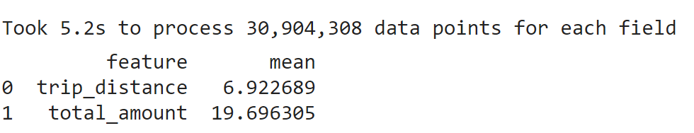
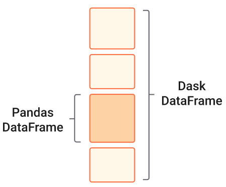

Lecture 5
Introduction to Dask
Georgetown University
Spring 2024
Today’s Plan
What is Dask?
Dask DataFrames
Dask DataFrame Best Practices
Other Dask Data Structures
Moving to a Dask Cluster
Machine Learning using Dask
Dask and Apache Spark
Further Reading
Takeaway
Dask provides an easy to use Python interface for data science and machine learning workloads. If you are familiar with Pandas and Numpy you can become productive with Dask very quickly. Dask is used by individual researchers as well as institutions across a broad set of domains.
What is Dask?
Dask is an open-source flexible library for parallel computing in Python.
Ok, but what is it really…
Blocked Algorithms1: Take a very large dataset that cannot fit into memory and break it into many many smaller parts each of which can be computed upon independantly, combine the results.
Directed Acyclic Graphs (DAGs): Create a graph to represent this sequence of operations.
Distributed Compute: Compute the results by executing this graph on a compute platform (multi-core CPU, multiple multi-core CPUs).
As a programmer what do I need to know?
Dask is composed of two parts: Dynamic Task Scheduling and Big Data Collections (such as parallel arrays, dataframes and lists). More details on the Dask Website.

Talk is cheap. Show me the code.
Data: All of the NYC yellow taxi trip data files from 2021.
import time
from dask import dataframe as dd
# Dask is able to read multiple files without us having to write a loop
df = dd.read_parquet("s3://bigdatateaching/nyctaxi-yellow-tripdata/2021/yellow_tripdata_2021-*.parquet")
# Lets take dask for a spin, how about finding the average of
# a few columns of interest: trip_distance, passenger_count, total_amount
start = time.perf_counter()
results = df[['trip_distance', 'total_amount']].mean().compute().to_frame().reset_index()
end = time.perf_counter()
# set column names for the resulting dataframe
results.columns = ["feature", "mean"]Millions of rows processed in a few seconds
Data that would not fit into the 16GB RAM of my laptop all at one time is easily analyzed and in quick time too! 
Dask DataFrames
Think of Dask DataFrames as collection of multiple Pandas dataframes.
Each Pandas dataframe contains rows that are grouped together based on an index.
Operations on a Dask DataFrame become faster because they happen in parallel across multiple partitions.
The individual Pandas dataframes may live on disk or on other machines.

Dask DataFrames (contd.)
Provide a subset of the Pandas API.
Following operations are fast
- Element-wise operations:
df.x + df.y, df * df - Row-wise selections:
df[df.x > 0] - groupby-aggregate:
df.groupby('x').min() - Join with pandas DataFrames:
dd.merge(df1, df2, on='id') - Rolling averages: df.rolling(…)
- Pearson’s correlation: df[[‘col1’, ‘col2’]].corr()
- Element-wise operations:
Dask DataFrame (contd.)
Question: Since Dask DataFrame operations are parallel, does it mean Dask is always faster than Pandas?
Answer: Actually, no. Dask is used when we operate on data that does not fit into memory and needs to be distributed (across cores, on the same machine, better still across multiple machines).
Pandas is highly optimized for performance, with critical code paths written in Cython or C. More here.
Dask DataFrames, when not to use
Setting a new index from an unsorted column.
Operations like groupby-apply and join on unsorted columns.
Operations that are slow in Pandas, such as iterating row-by-row, remain slow on a Dask DataFrame.
Moving to a Dask Cluster
To truly see the power of Dask and horizontal scaling in action, we need to move out of our local machine and onto a cluster.
Creating a Dask cluster is a lot of work involving networking, security and compute. Unlike an EMR cluster, there is no GUI for creating a Dask cluster.
Several options exist, including something called Deployment as a service i.e. creating a cluster by calling an API, not a cloud provider API but an APIU provided by a SaaS which in turn does all the behind the scenes work of creating the cluster by calling (many) cloud provider APIs. See Coiled.
Moving to a Dask Cluster (contd.)
There are open source solutions also which provide a cloud agnostic way of deploying Dask clusters. No matter whether you are on AWS, Azure or GCP, you call the same API. See Dask Cloud Provider.
Cloud providers such as AWS provide Infrastructure as Code templates to create Dask Clusters. These template (
yamlorjsonfiles) are declarative i.e. they describe what infrastructure you want to create and the Infrastructure as Code service takes care of translating these templates into API calls that actually create these resources.
Moving to a Dask Cluster (contd.)
Similar to EMR, Dask clusters have the concept of a Scheduler and a collection of Workers.
The compute for a Dask cluster can be provided by a collection of EC2 VMs like we saw with EMR.
It could also be provided by a serverless compute engine such as AWS Fargate where we do not create or manage the server (hence serverless) but only specify the container image to run and the memory and CPU requirements.
Machine Learning using Dask
Dask.org page says Scale the Python tools you love. How about Machine Learning libraries?
Dask-ML provides scalable machine learning in Python using Dask alongside popular machine learning libraries like Scikit-Learn, XGBoost, and others.
Dask-ML helps with both compute bound (such as grid search) and memory bound (dataset too large) ML tasks.
Dask and Apache Spark
There is hardly ever (probably never) a single solution that works for all big data analytics use-cases.
Dask or Spark is a question that often comes up because they do have overlapping functionality. From the Dask website: Comparison to Spark.
A rule of thumb: If you are designing an Extract Transform Load (ETL) pipeline and want to use SQL then stick with Spark ecosystem (Hadoop, Hudi, Iceberg etc.), if you want to remain within the Python ecosystem (Pandas, Numpy, scikit-learn, joblib) then Dask could be a good choice.
Further Reading
- Dask and Spark
- Cluster creation
Further Reading (contd.)
- Dask-ML
- Blogs on Dask
- https://aws.amazon.com/blogs/publicsector/analyze-terabyte-scale-geospatial-datasets-with-dask-and-jupyter-on-aws/
- https://medium.com/capital-one-tech/dask-and-rapids-the-next-big-things-for-data-science-and-machine-learning-at-capital-one-d4bba136cc70
- https://spell.ml/blog/large-scale-etl-jobs-using-dask-Xyl8GhEAACQAjK6h
Further Reading (contd.)
- Misc.
- Dask Issues.